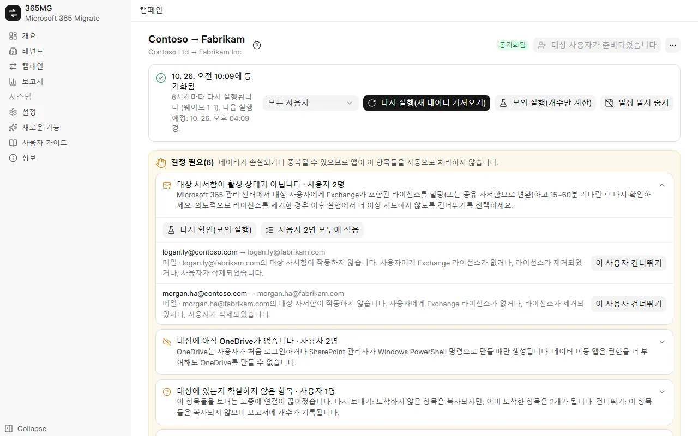
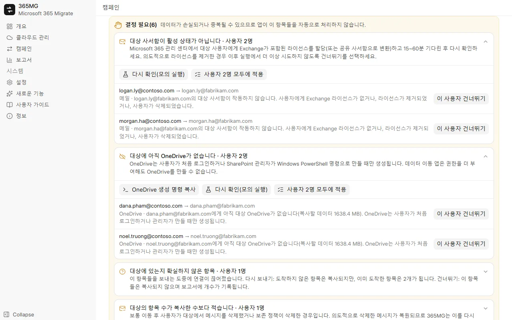

Microsoft 365와 Google Workspace
원하는 수만큼 Microsoft 365 테넌트와 Google Workspace 계정을 연결한 후 어느 방향으로든 복사합니다: Microsoft ↔ Google, Microsoft → Microsoft, Google → Google.
Microsoft 365 ↔ Google Workspace 마이그레이션
365MG는 사용자의 Windows PC에서 Microsoft 365와 Google Workspace 간에 방향에 관계없이 메일, 연락처, 일정, OneDrive 및 Google Drive, 공유 드라이브와 그룹을 복사합니다. 모든 항목을 기록하므로 다시 실행해도 중복이 생기지 않으며, 데이터가 손실되거나 중복될 수 있는 선택이 필요할 때마다 멈추고 확인을 요청합니다.

원하는 수만큼 Microsoft 365 테넌트와 Google Workspace 계정을 연결한 후 어느 방향으로든 복사합니다: Microsoft ↔ Google, Microsoft → Microsoft, Google → Google.
필터로 원본 사용자를 선택하고, 대상 사용자와 자동으로 일치시키고, 대상 도메인과 라이선스를 일괄 할당하고, 없는 사용자를 만듭니다.
Exchange 사서함 API를 통해 폴더별로 모든 항목을 내보내고 가져옵니다. 항목별 기록이 있어 중지된 실행은 멈춘 지점부터 계속합니다.
파일과 폴더를 복사하고 만든 날짜와 수정한 날짜를 유지하며, 모든 파일을 quickXorHash로 확인하고 큰 파일은 재개 가능한 64MB 범위로 다운로드합니다.
배포 목록과 메일 사용 그룹을 같은 별칭, 구성원 및 소유자를 가진 Microsoft 365 그룹으로 다시 만듭니다.
사용자를 웨이브로 나누고, 아무것도 쓰지 않고 실행 시 복사할 양을 계산한 다음, 실제로 복사하고 전환 시점까지 일정에 따라 계속 동기화합니다.
대상 사서함이나 OneDrive가 없는 경우, 다시 만들어진 사용자, 결과를 알 수 없는 항목: 각각 "결정 필요" 목록에 해결할 작업과 함께 표시됩니다.
사용자별 및 전체의 원본 대비 복사 수, 확인이 필요한 사용자, 그룹 및 메모를 보여 주며, 독립 실행형 HTML 페이지나 CSV로 내보낼 수 있습니다.
English, Tiếng Việt, 简体中文, 한국어, 日本語, Deutsch, Русский, हिन्दी 및 العربية(오른쪽에서 왼쪽).
모든 보호 장치는 사용자 350명 규모의 회사를 이동하면서 실제로 발생한 문제에서 비롯되었습니다. 도중에 라이선스를 잃은 사서함, 아직 존재하지 않던 OneDrive, 보내는 도중 끊어진 연결 등입니다.
